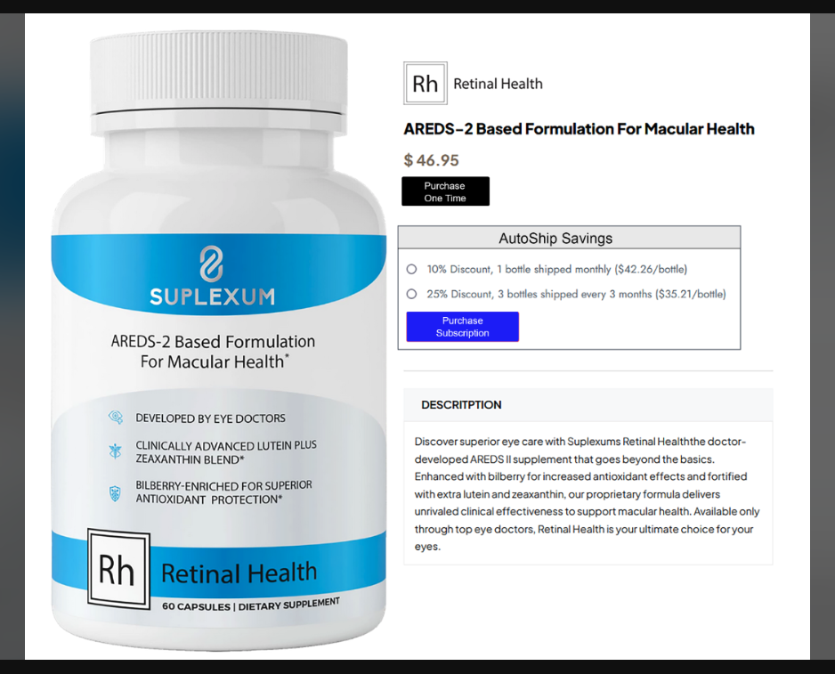

How Can We Help
send us a message


Retinal Health is an advanced AREDS II-based eye health supplement developed by eye doctors. It is designed to support macular health and protect against age-related macular degeneration (AMD).
Retinal Health is an advanced AREDS II-based eye health supplement developed by eye doctors. It is designed to support macular health and protect against age-related macular degeneration (AMD).
Retinal Health is an advanced AREDS II-based eye health supplement developed by eye doctors. It is designed to support macular health and protect against age-related macular degeneration (AMD).
Retinal Health is an advanced AREDS II-based eye health supplement developed by eye doctors. It is designed to support macular health and protect against age-related macular degeneration (AMD).
Retinal Health includes increased concentrations of lutein and zeaxanthin, as well as bilberry, a powerful antioxidant known for supporting retinal health and improving blood flow to the eyes.
Lutein and zeaxanthin are essential carotenoids found in the retina that help protect your eyes from harmful blue light and oxidative stress. Increased levels in Retinal Health provide stronger support for macular health.
Bilberry is rich in antioxidants that support retinal health and help maintain healthy blood flow to the eyes. It complements the other ingredients in Retinal Health to provide comprehensive support for eye health.
Retinal Health is recommended for individuals concerned about their eye health, especially those with age-related macular degeneration (AMD) or those looking to support their macular health proactively.
The recommended dosage for Retinal Health is [insert dosage], taken daily with a meal, or as directed by your healthcare provider.
No, Retinal Health is only available through licensed eye doctors to ensure that it is used as part of a comprehensive eye care plan.
While Retinal Health is generally safe, we recommend consulting with your eye doctor or healthcare provider before starting any new supplement, especially if you are taking medications or have a medical condition.
As a dietary supplement, Retinal Health is manufactured in compliance with FDA regulations, but dietary supplements are not individually approved by the FDA. However, the ingredients in Retinal Health are generally recognized as safe and used widely in eye health supplements.
Retinal Health is designed to support eye health and reduce the risk of AMD progression, but it is not a cure or treatment for AMD. It should be used as part of an overall approach to managing your eye health under the guidance of your eye care professional.
Retinal Health is available exclusively through eye care professionals to ensure that it complements your personalized eye health plan. For your convenience, you can also order it directly from our website with the recommendation of your doctor. This ensures you continue to receive top-quality care and the best possible support for your eye health.
send us a message